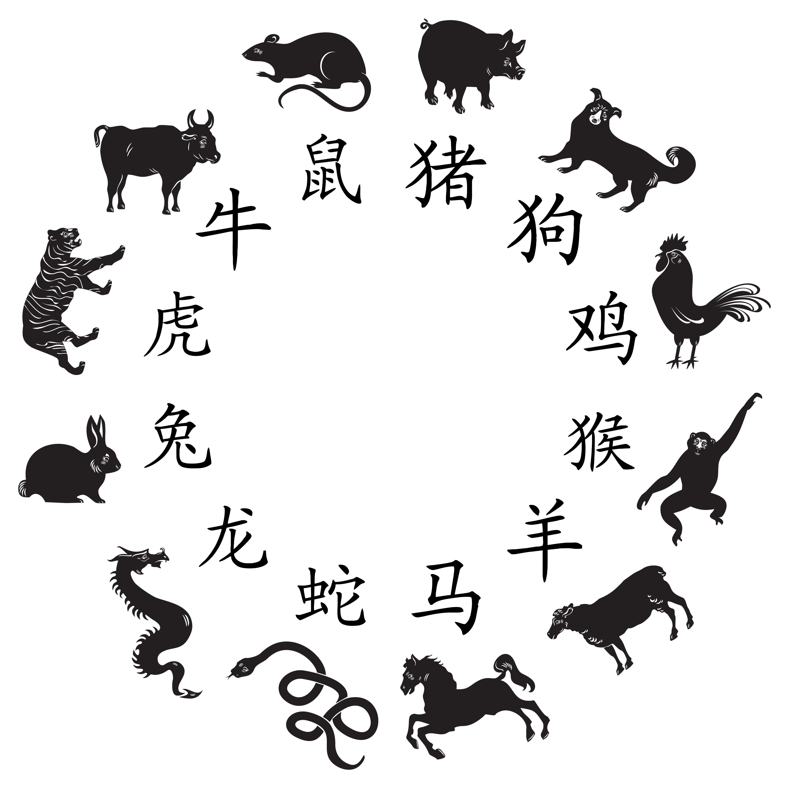

12 Sternzeichen beschreiben
Niveau B1 Sprachhandlung Charakter beschreiben Thema Sternzeichen Grammatik Attributive und prädikative Adjektive

In China bestimmt mein Geburtsjahr mein Sternzeichen. Ich bin im Jahr 1987 geboren, mein Sternzeichen ist also Hase (兔子). Was ist Ihr Sternzeichen?
Ich bin im Jahr … geboren. Mein Sternzeichen ist …
In Europa bestimmt nicht das Geburtsjahr, sondern das Geburtsdatum mein Sternzeichen. Ich bin am 30. August geboren, mein Sternzeichen ist also Jungfrau. Wie heißen die anderen europäischen Sternzeichen? Ordnen Sie zusammen mit Ihrer Partnerin die Namen den Bildern zu.
Steinbock – Wassermann – Fische – Widder – Stier – Zwillinge – Krebs – Löwe – Jungfrau – Waage – Skorpion – Schütze

Viele Europäer glauben, dass der Charakter eines Menschen von seinem Sternzeichen beeinflusst wird. Folgende Eigenschaften werden von den Sternzeichen bestimmt. Erklären Sie die Bedeutung zusammen mit Ihrer Partnerin. Benutzen Sie ein Wörterbuch.
| Eigenschaft | Bedeutung | ||
|---|---|---|---|
| gesellig sein | 1 | A | Man möchte ein Ziel unbedingt erreichen und gibt nicht auf. |
| kreativ sein | 2 | B | Man streitet gerne. |
| ehrgeizig sein | 3 | C | Man hat viele neue Ideen. |
| streitlustig sein | 4 | D | Andere Menschen können sich auf einen verlassen. Man hält, was man versprochen hat. |
| verlässlich sein | 5 | E | Man ist gern unter Leuten. |
| Eigenschaft | Bedeutung | ||
|---|---|---|---|
| eifersüchtig sein | 6 | F | Man ist immer bereit zu helfen. |
| wissbegierig sein | 7 | G | Man ändert schnell seine Stimmung. Man ist z. B. schlecht gelaunt, aber im nächsten Moment ist man plötzlich sehr nett. |
| gutmütig sein | 8 | H | Man möchte Neues erfahren und lernen. |
| hilfsbereit sein | 9 | I | Man hat z. B. Angst, dass man die Person, die man liebt, an einen anderen Menschen verliert. |
| launisch sein | 10 | J | Man ist sehr geduldig und friedlich. |
| Eigenschaft | Bedeutung | ||
|---|---|---|---|
| großzügig sein | 11 | K | Man hat keine Hoffnung. |
| perfektionistisch sein | 12 | L | Man hält sich selbst für besser als andere. |
| pessimistisch sein | 13 | M | Man lädt z. B. seine Freunde auf ein Getränk ein. |
| gerecht sein | 14 | N | Man legt sehr viel Wert auf sein Aussehen. |
| arrogant sein | 15 | O | Man bevorzugt niemanden und man möchte alle gleich behandeln. |
| eitel sein | 16 | P | Man möchte alles perfekt machen. |
| Eigenschaft | Bedeutung | ||
|---|---|---|---|
| ehrlich sein | 17 | Q | Man erfüllt seine Pflichten. |
| nachtragend sein | 18 | R | Man ist sehr lange auf jemanden böse. |
| selbstbewusst sein | 19 | S | Man unternimmt gerne etwas. |
| pflichtbewusst sein | 20 | T | Man ist sich des eigenen Wertes und Könnens bewusst. |
| unternehmungslustig sein | 21 | U | Man ist einfallreich, hat viele Ideen und stellt sich gern Dinge vor. |
| phantasievoll sein | 22 | V | Man lügt nicht. |
Diskutieren Sie mit Ihrer Partnerin folgende Fragen:
- Welches Sternzeichen bedingt vermutlich welche Eigenschaft?
- Welche Eigenschaften finden Sie gut, welche schlecht?
- Welche Eigenschaften sind wichtig für Studierende?
- Welche Eigenschaften treffen auf Sie zu?
Ich vermute, Stiere sind …, weil …
Ich finde ehrgeizig sein ist eine gute Eigenschaft, weil …
Ich finde … ist eine schlechte Eigenschaft, weil …
Für Studierende ist wichtig, dass sie … sind. Weil …
Ich finde nicht so wichtig, dass Studierende … sind, weil …
Ich glaube, ich bin … Meine Freunde sagen oft, dass ich … bin.
Ich bin nicht besonders …
Pause
Bilden Sie kleine Gruppen. Rufen Sie das Blatt mit den Sternzeichen auf. Hören Sie den Originaltext. Versuchen Sie dabei, den Text so vollständig wie möglich mitzuschreiben. Vergleichen Sie dann in der Gruppe und vervollständigen Sie Ihre Mitschrift.
Bilden Sie neue Gruppen. Beschreiben Sie die Eigenschaften Ihres Sternzeichens, die anderen raten Ihr Sternzeichen. Diskutieren Sie gemeinsam, ob Ihr Sternzeichen zu Ihnen passt.
Student A: Mein Sternzeichen ist gesellig und arbeitet gern kreativ. Student B: Bist du ein Fisch? Fische sind kreativ, oder? Student C: Nein, nein, Fische sind phantasievoll. Das ist nicht dasselbe. Student A: Mein Sternzeichen ist außerdem manchmal stur. Student C: Bist du ein Wassermann? Student A: Ja, genau, ich bin am 15. Februar geboren. Student C: Findest du, das Sternzeichen passt gut zu dir? Student B: Ich finde nicht, dass du besonders stur bist. Student A: Nein, und besonders kreativ bin ich auch nicht. Wassermann passt nicht. Widder passt besser, weil ich …
Mein Sternzeichen ist … und …
Findest du, … passt zu dir?